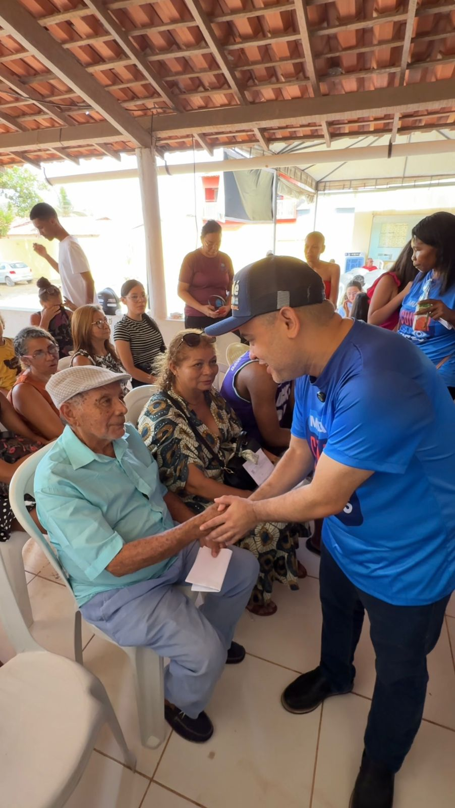
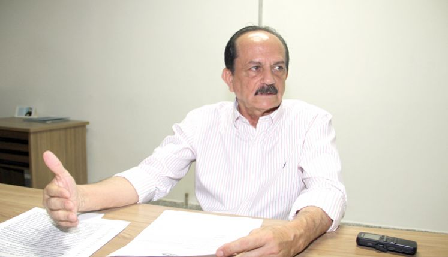

ATRAÇÃO PRINCIPAL
Estátua de São José
A estátua de São José de Ribamar é um dos principais símbolos
religiosos e
turísticos do Maranhão. Localizada no alto do santuário que leva o nome do santo, a
imagem impressiona
por sua grandiosidade — com cerca de 33 metros de altura, é uma das maiores do
Brasil
dedicadas a um santo
católico. O monumento representa São José segurando o Menino Jesus e voltado para o mar,
simbolizando
proteção aos pescadores e aos habitantes da cidade. Além de sua importância espiritual, o local
oferece
uma
vista panorâmica da orla e recebe milhares de visitantes durante as festas religiosas e
peregrinações ao
longo do ano.

PREFEITO
Júlio Cesar De Souza Matos
O atual prefeito de São José de Ribamar é Dr. Julinho (Júlio Matos), médico
obstetra e
ginecologista, filiado ao partido PODEMOS.
Nascido em 11 de janeiro de 1952 em São Luís (MA), ele assumiu a prefeitura pela
primeira vez em 2021
e foi reeleito em 2024 com 51.719 votos, correspondendo a
54,27% dos votos válidos. Durante sua gestão,
tem se destacado por iniciativas como a realização de concursos públicos para áreas de saúde,
educação e
segurança, além de projetos de regularização fundiária que entregam títulos de propriedade aos
moradores,
promovendo cidadania e segurança jurídica. Seu mandato tem foco em desenvolvimento social e melhoria
da
infraestrutura municipal, consolidando sua atuação política na região.
ÚLTIMAS NOTÍCIAS

Mais de 600 pessoas são atendidas em ação oftalmológica
viabilizada por Catulé Júnior em São José de Ribamar!
Mais de 600 pessoas são atendidas em ação oftalmológica
viabilizada por Catulé Júnior em São José de Ribamar!
Bairro Parque Vitória recebeu o mutirão Cuidar dos Olhos, idealizado pelo deputado
estadual
Catulé Júnior, que atendeu mais de 600 pessoas com consultas e exames oftalmológicos.
Bairro Parque Vitória recebeu o mutirão Cuidar dos Olhos, idealizado pelo
deputado estadual
Catulé Júnior, que atendeu mais de 600 pessoas com consultas e exames oftalmológicos.
Publicado em 20/10/2025 às 00:35

“A BRK é uma piranha para cobrar, mas uma preguiça para resolver os problemas”, diz Dr.
Julinho
“A BRK é uma piranha para cobrar, mas uma preguiça para resolver os problemas”, diz Dr.
Julinho
O prefeito reforçou que seguirá adotando medidas legais
para reverter o contrato e retomar o controle público do sistema de abastecimento.
O prefeito reforçou que seguirá adotando medidas legais
para reverter o contrato e retomar o controle público do sistema de abastecimento.
Publicado em 20/10/2025 às 09:05
Funcionários denunciam atraso nos pagamentos da empresa Nutrimax
Funcionários denunciam atraso nos pagamentos da empresa Nutrimax
Responsáveis pelo lanche escolar em São José de Ribamar, fazem atrasos nos pagamentos e
irregularidades trabalhistas após o encerramento de seus contratos.
Responsáveis pelo lanche escolar em São José de Ribamar, fazem atrasos nos
pagamentos e
irregularidades trabalhistas após o encerramento de seus contratos.
Publicado em 20/10/2025 às 09:05